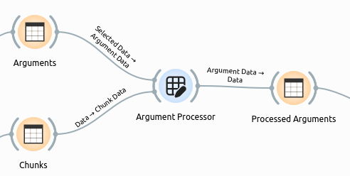
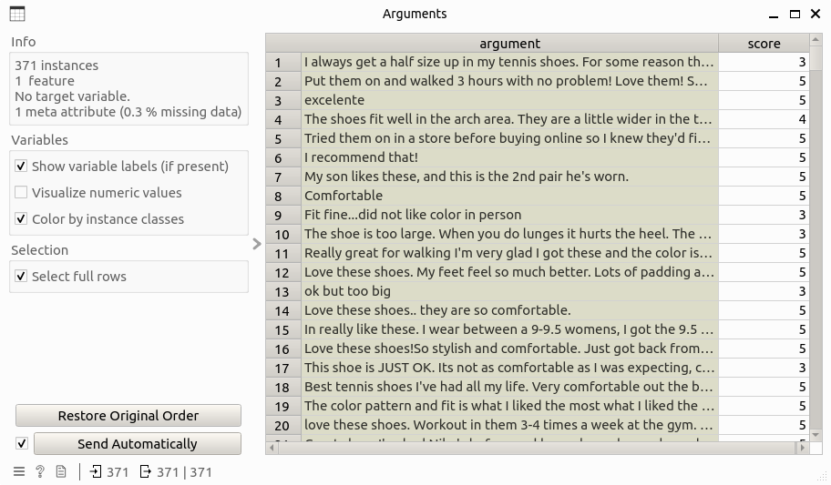
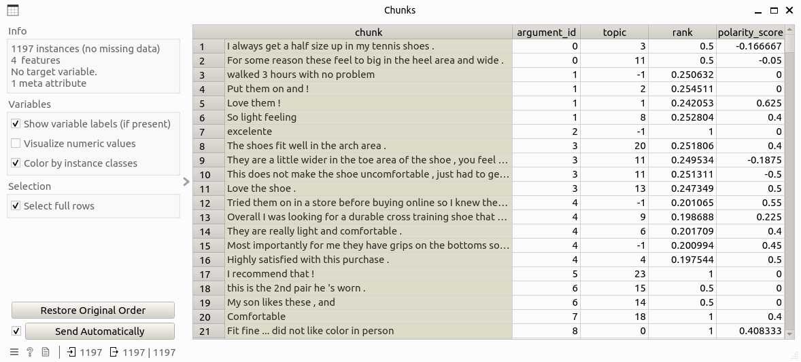
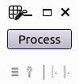
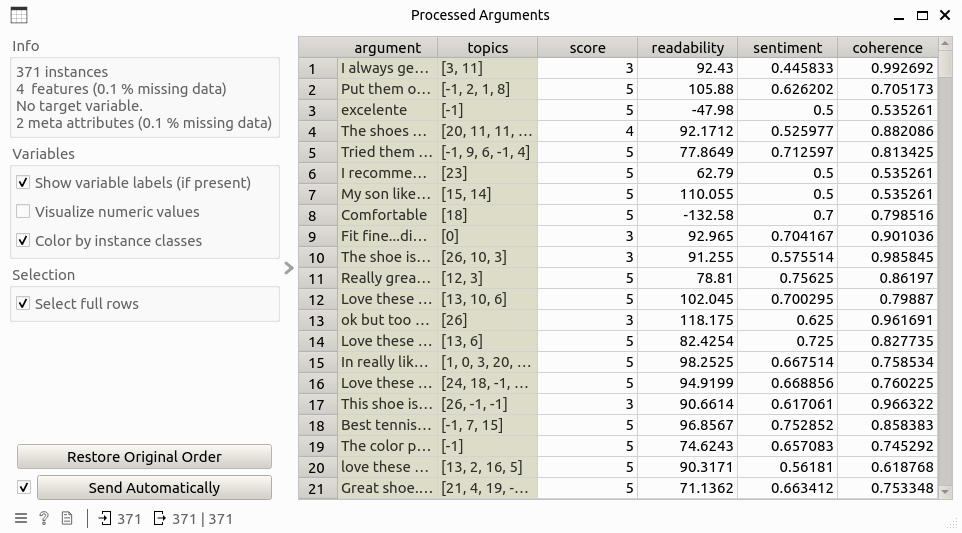

Argument Processor
Calculate argument-level metrics and measures.
Signals
Inputs
Argument Data: Data table that contains the argument-level information. This table must contain two columns: argument for argument text and score that is the corresponding overview score.Chunk Data: Data table that contains information about argument chunks, including columns: chunk, argument_id, topic, rank, and polarity_score.
Outputs:
Argument Data: Data table that contains additional information of arguments to the input data table, including columns: argument, score, topics, readability, sentiment, and coherence.
Description
Argument Processor implements the following functions:
Topic merging: For each argument, its topic is defined as the combination of the topics of chunks that belongs to this one.
Argument readability computing: The Flesh-Kincaid reading score is computed for each arugment, check this link for more information.
Argument Coherence computing: In this step, the coherence between the sentiment and overall score of arguments are calculated, where the sentiment score of argument is calculated as the sum of sentiment scores of corresponding chunks, weighted by chunk ranks.
Control
(None)
Example
Here is an example workflow that shows how the argument processor widget works:

where the input Arguments and Chunks table look like this:
 
Double-clicking the widget opens the subinterface like this:

By clicking on the Process button and wait for a while, the result data table will be computed like this:
